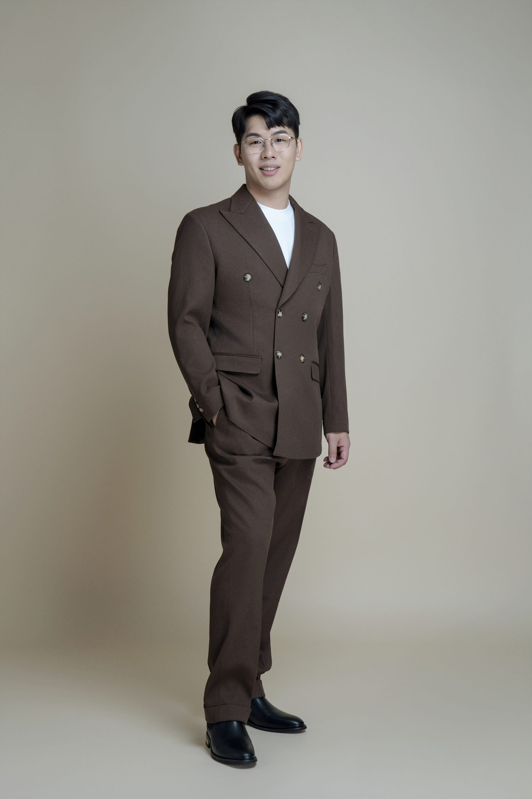
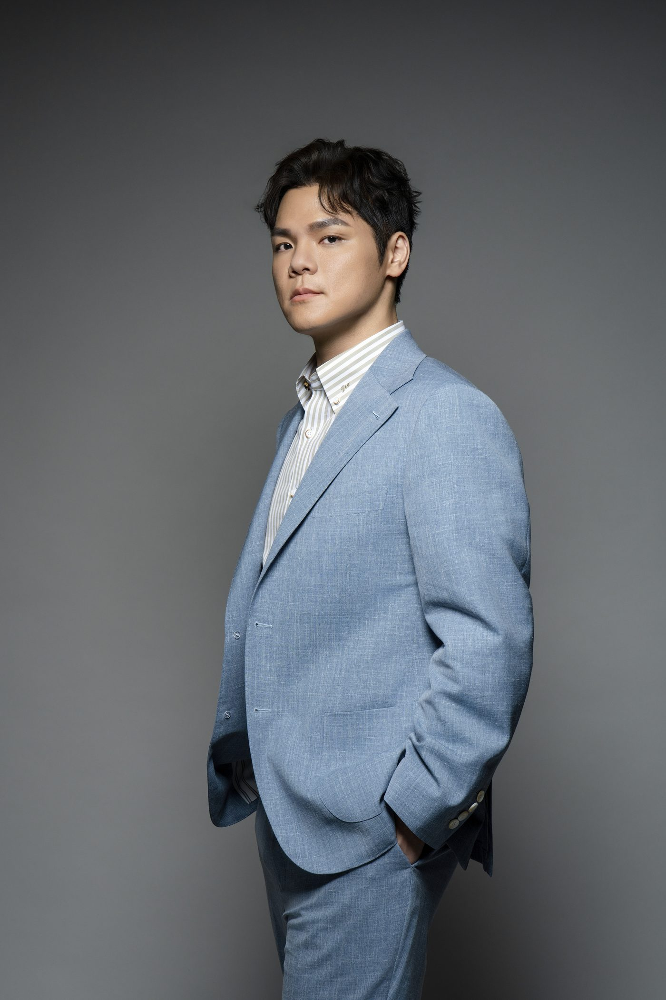
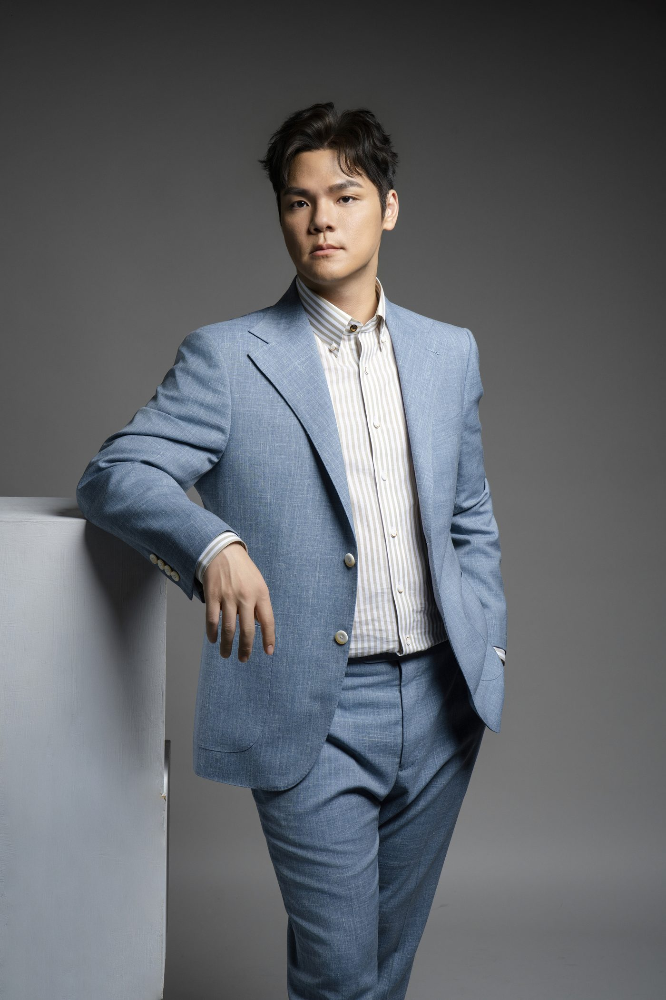
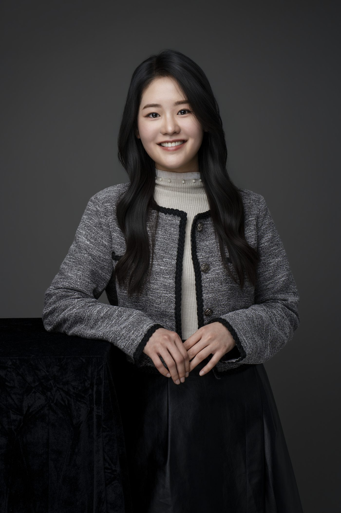
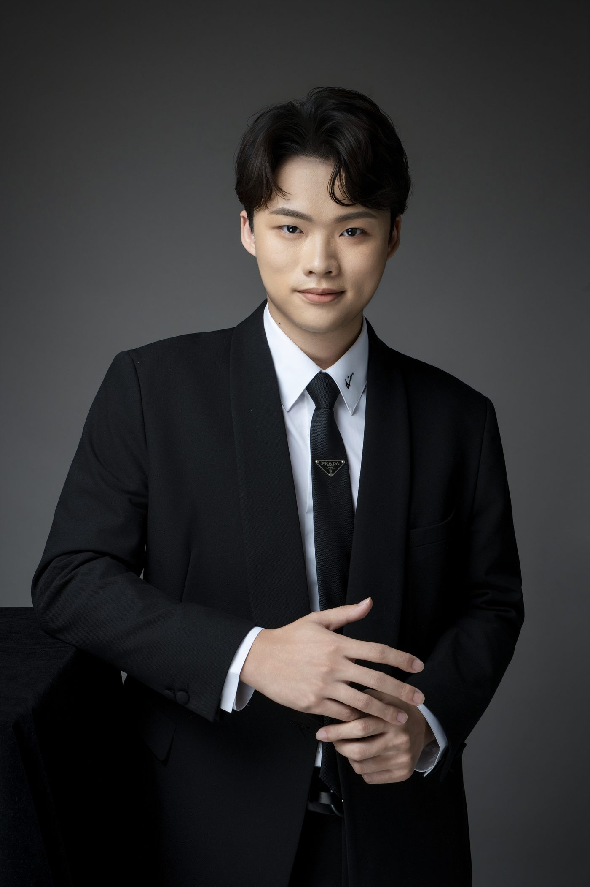
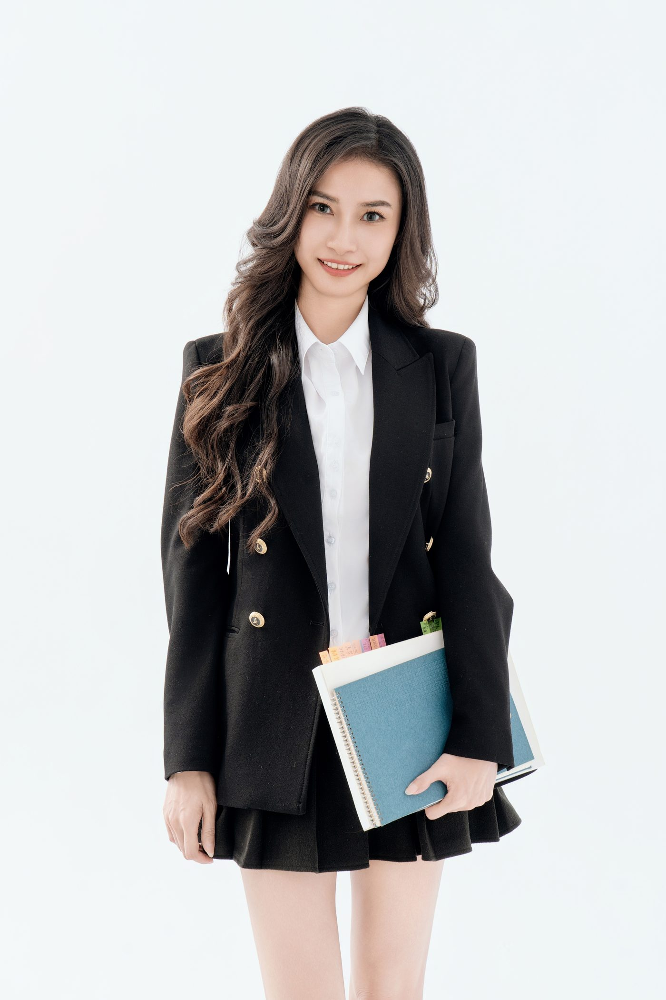
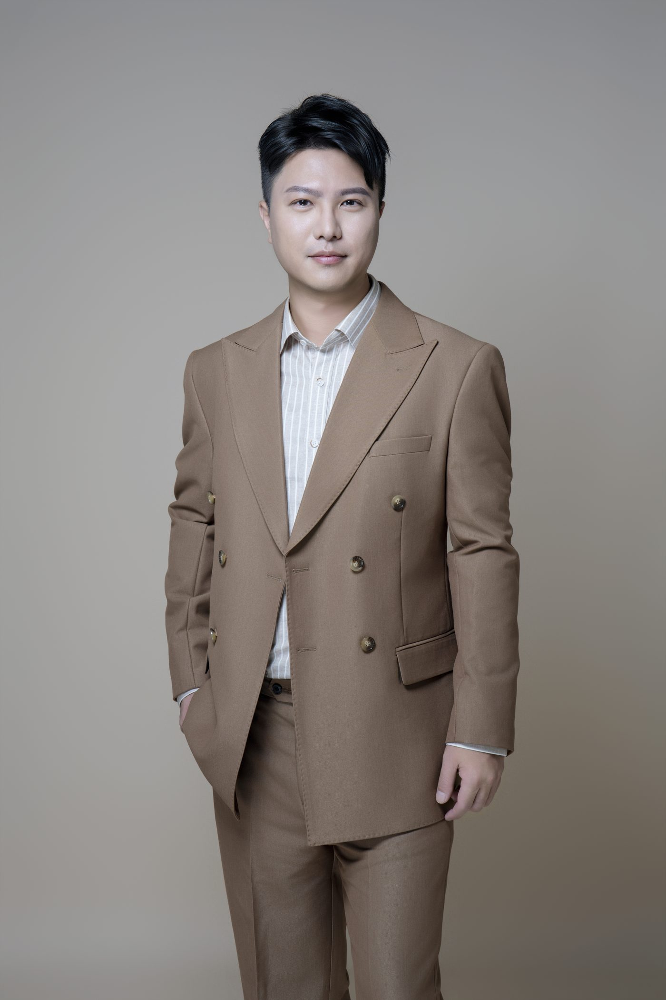
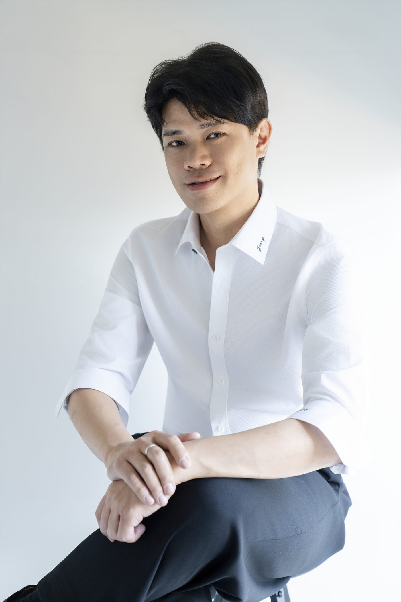
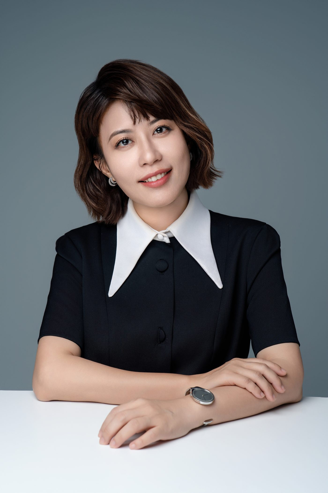
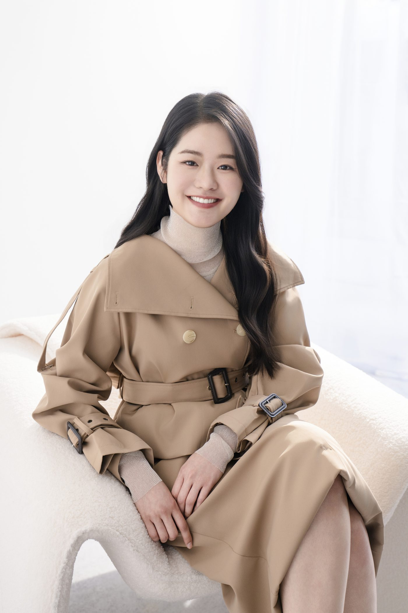

形象照姿勢沒有一套標準答案，要看照片用途、服裝和構圖。可以調整的主要是四個地方：重心、肩膀、身體的角度和手。這些不需要在家先練好，拍攝時攝影師會依畫面帶你調；先知道這幾個地方在調什麼，被指示時比較不會慌。
鏡頭一舉起來，手忽然不知道該放哪；站著像立正、肩膀越來越緊、手垂在兩側，都有原因，也都可以一件一件調。
為什麼一拍照就站得很僵？
因為少了平常那些讓身體放鬆的小動作。
平常站著說話時，重心會在兩隻腳之間換來換去，手會拿東西、比手勢，肩膀也跟著呼吸起伏。到了鏡頭前，人會下意識站好、站正，結果重心平均分在兩腳、肩膀因為緊張往上提、手沒事做就直直垂下來。三件事加在一起，看起來容易像在立正。
站著拍，可以調整哪些地方？
重心、肩膀、身體角度和手，四個地方都可以試著調。
| 調整 | 怎麼做 | 為什麼 |
|---|---|---|
| 重心 | 試著把重心移到其中一隻腳，跟兩腳平均站比較看看 | 兩腳平均站容易像立正；偏不偏一邊，看構圖和服裝 |
| 肩膀 | 吸一口氣，吐氣時讓肩膀沉下來 | 緊張時肩膀容易上提，放下來肩線比較舒展 |
| 身體角度 | 身體稍微轉向一側，臉再轉回來看鏡頭 | 全正面適合證件照；形象照可以試試微側，看哪個角度適合你 |
| 手 | 見下一段 | 手有地方放，比較不會不知所措 |
這四件不必一次全記住，現場會一件一件提醒。



手要放哪裡？
讓手有一件事做。下面幾種從正式到輕鬆，可以依用途選：
- 雙手在身前輕搭：正式的站姿，適合官網和名片用的照片。
- 整理袖口、摸戒指：像正在整理袖子或戒指的瞬間，穿西裝或襯衫時很自然。
- 拿著一樣跟工作有關的東西：眼鏡、筆記本、外套搭在手上。
- 單手插口袋：另一隻手自然放下，看起來比較輕鬆。




坐著拍要注意什麼？
看椅子和服裝，可以先試坐在椅面前段、上身微微往前。
靠著椅背也可以拍，看椅子、服裝和想呈現的感覺。想看起來像正在跟人對話，可以只坐前段、上身稍微前傾。手可以輕放在桌面上，或在膝上交疊。椅子太低、裙子太短或不舒服，都可以當下跟攝影師說，換一種坐法。


男生、女生的姿勢要分開看嗎？
形象照的姿勢不需要單純依性別區分，會依服裝款式、身形比例與照片用途調整，重點是找到適合個人條件與畫面需求的姿勢。
- 西裝外套：扣不扣、扣哪一顆，依款式不同。常見的兩顆釦西裝，站著時扣上面那顆，坐下時解開。不確定的話，拍攝前跟攝影師確認。
- 裙裝坐著拍：雙腿交疊、往同一側斜放，線條比較順，也比較不用擔心走光。
- 長髮：撥到一側肩後，可以露出肩線和領口；要不要撥，看想呈現的感覺。
- 肩膀上縮、下巴抬太高：誰都可能發生。肩膀往後往下放，下巴稍微往前、往下一點，再看畫面調整。

拍照時一直不敢動，怎麼辦？
可以動，而且建議動。
一直固定同一個姿勢、盯著鏡頭不敢移動，身體容易越來越緊。換一下重心、轉頭再看回鏡頭、整理一下袖口，這些小動作之間，也能拍到比較放鬆的畫面。
這些需要先在家練嗎？
不需要。
CHUN.EN 拍攝時，攝影師會用具體的動作指令帶你調整，你照著做就好。先讀過這篇的好處是，攝影師請你「往前站半步再回頭」「重心換到另一隻腳」時，你知道他在做什麼。某個動作不舒服，或覺得不像你，當下說出來就能換。
如果你一到鏡頭前就整個人僵住，〈很怕拍照，一拍就僵硬怎麼辦？〉整理了現場怎麼引導。
常見問題
形象照姿勢怎麼擺？+
拍照時手要放哪裡？+
坐著拍形象照要注意什麼？+
男生、女生的形象照姿勢有差嗎？+
想了解形象照的拍攝流程與方案，見 C.photos 服務頁。